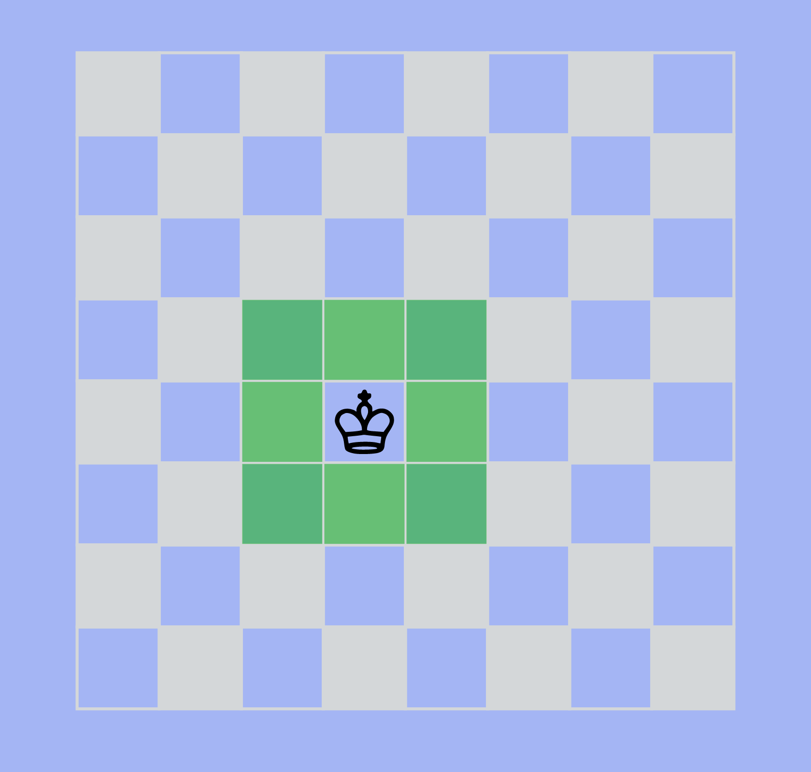

THE PIECES
Each of the pieces move differently. When you are developing your pieces, they are typically placed in active squares to attack or defensive squares.
THE KING
The King can move one space in any direction (up, down, diagonal, side). If the king is in check (in a position where he can be captured), then he must move to a different square. The king also cannot move to a square that puts it in check.

THE QUEEN
The Queen is the most powerful piece in chess. It can move any number of squares in all directions as long as she doesn't run into any pieces.

THE ROOKS
The rooks can move up and down in any direction.

THE BISHOPS
The rooks can move diagonally in any direction

THE KNIGHTS
The knights can move in an L shape (one space up, down, sideways and then one space diagonal). A way to remember how it moves is "hop hop turn."

THE PAWNS
On the first move, pawns can choose to move one or two spaces up. After the first move, they can only move one space up. Pawns cannot move backwards and can only capture diagonally. It is also important to note that pawns can only move diagonally when capturing. Once pawns get to the other end of the board, they can promote to become any other piece on the board (usually the queen).

COMPONENTS OF THE GAME
The game is composed of three parts; the opening, middlegame, and endgame. There are four important aspects and basic strategies you should follow when playing the game:
BOARD GEOGRAPHY
When starting the game, the center squares are important to gain control of. You want to place your pieces near or towards the center.